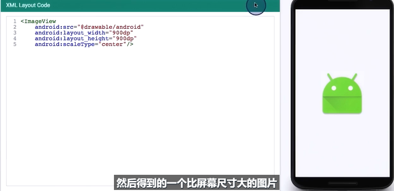

Android基础
一、规范¶
（一）XML¶
Button长宽不得低于48dp，否则在高分辨率的设备中会很小。
（48dp约为9mm）
（二）使用统一标准字号¶
1 2 3 4 | |
（三）控件间距¶
margin和padding的大小建议以8dp为单位，以它的倍数来设置。
二、布局¶
（一）图片适配屏幕¶
scaleType属性：center与centerCrop
当图片大小大于屏幕时，center不会改变图片大小，直接居中显示；centerCrop会按比例缩小到屏幕尺寸，并居中显示。
当图片大小小于屏幕时，若ImageView的大小没有固定，两个参数均无效；当把ImageView的大小固定为超过屏幕尺寸时，center将居中显示，centerCrop将按比例放大图片，自适应到ImageView的大小居中显示。


固定ImageView的大小后：


（二）圆角布局¶
Drawable中创建xml文件，设置为控件的背景。
1 2 3 4 5 6 7 8 9 10 11 12 13 | |
三、安卓四大组件¶
（一）Activity¶
一个Activity是一个单独的窗口/屏幕。
（二）Service¶
startService()可以由其他组件调用，该组件的生命周期结束后，Service依旧可以保持启动状态不受影响。用stopService()关闭。
BindService()，Service与调用者的生命周期绑定在一起，即“不求同时生，必须同时死”。用unBindService()关闭。
（三）content provider¶
- 需要在多个应用程序间共享数据时，才需要content provider。它将一个应用程序的指定数据集提供给其他应用程序。
- Content Provider用于保存和获取数据，并使其对所有应用程序可见。这是不同应用程序间共享数据的唯一方式，因为android没有提供所有应用共同访问的公共存储区。
（四）broadcast receiver¶
- 在AndroidManifest文件中进行配置的广播接收者（静态注册），会随系统的启动而一直处于活跃状态，只要接收到感兴趣的广播就会触发（即使程序未运行）。
- 当发生电话呼入/数据网络可用等事件时，可通过广播接收器进行接收并做出响应。它没有用户界面。可以启动一个
activity或service来响应它们收到的信息，或者用NotificationManager来通知用户。
（五）android中的任务（activity栈）¶
- 栈顶是当前运行的
Activity，新的在栈顶入栈，返回时出栈。 - 栈中的
Activity永远不会重排，只会压入或弹出。
（六）Activity携带数据跳转¶
从Activity A跳转到Activity B
Activity A
1 2 3 4 5 | |
1 2 3 4 5 6 7 8 9 10 | |
Activity B
1 2 3 4 5 | |
四、常用设计模式¶
（一） 观察者模式¶
使用LiveData/MutableLiveData和Observer进行数据观测：
- 在LiveData中放入需要被观测的数据
1 | |
- 创建Observer，表明该数据变化后要进行的操作
1 2 3 4 5 | |
- 观察
1 | |
- 数据改变
1 | |
这样，当data发生改变时就会触发myObserver进行一些操作。
五、常用组件¶
（一）navigation¶
参考博客：https://blog.csdn.net/mq2553299/article/details/80445952
官方教程：https://developer.android.com/guide/navigation
最后更新: July 16, 2022 10:57:39